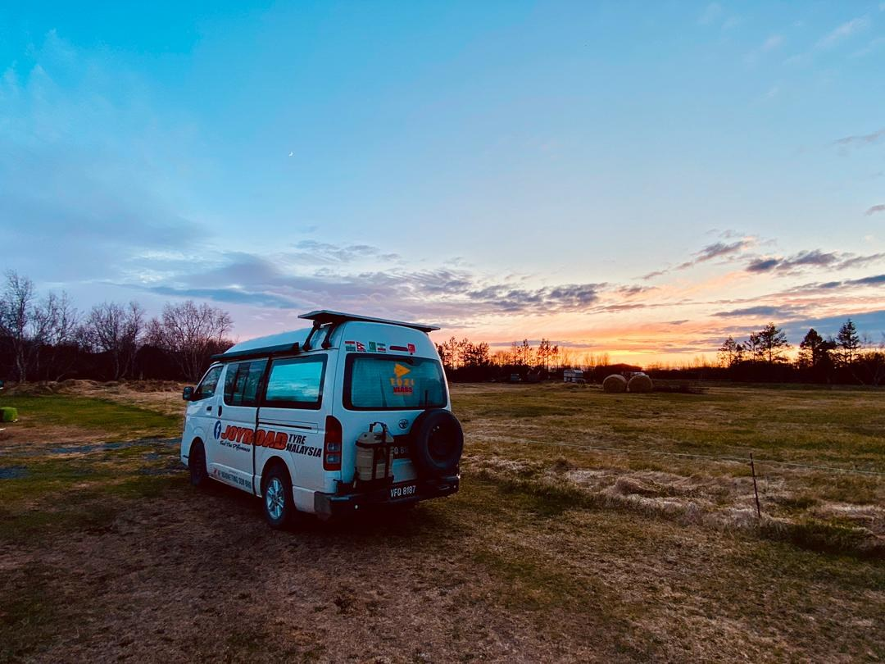
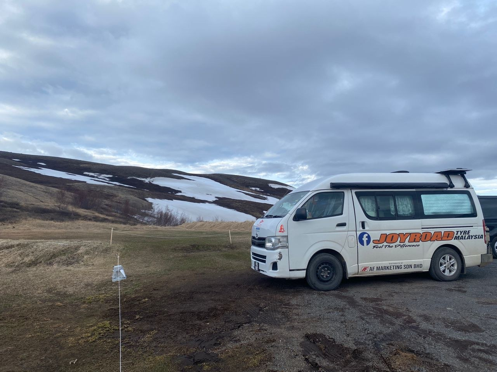
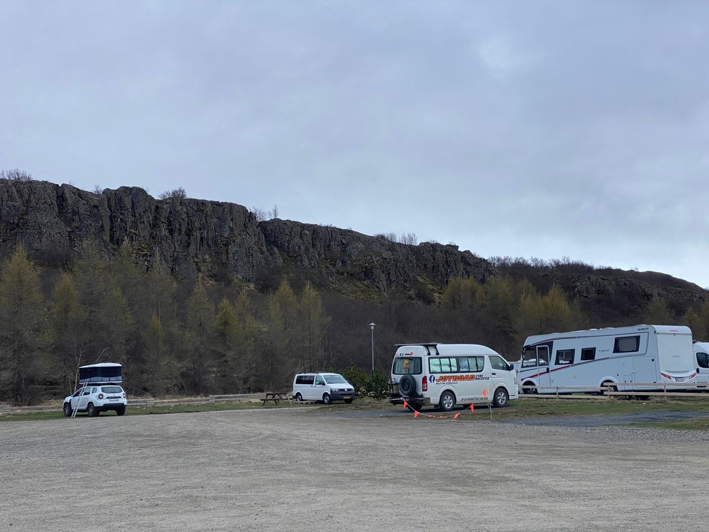
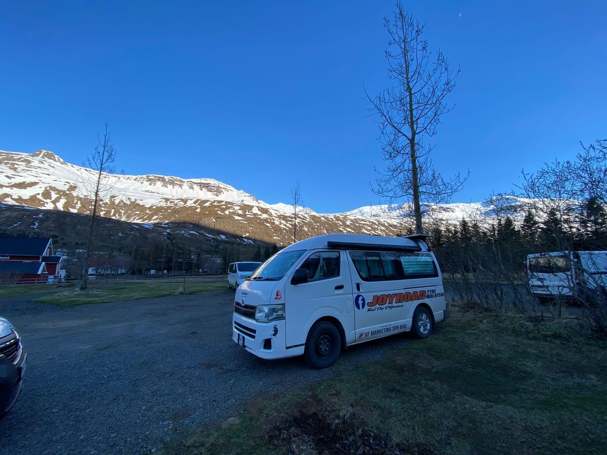
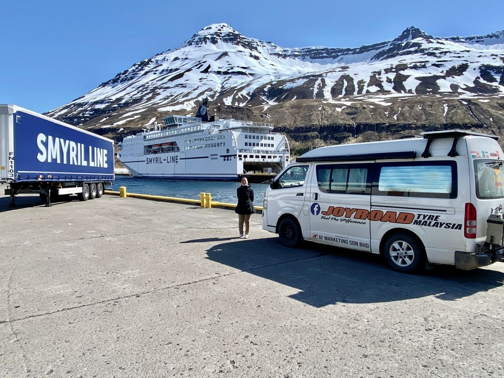

Real Story · 中文
11/5 — Vogar Camping near Lake Mývatn.
11 May 2024，我 overnight at Vogar Camping near Lake Mývatn。 那张照片是晚上 10:39pm 拍的。
Iceland 的晚上很特别。 时间已经很 late， 可是天空还留着光。 Toyotaki 停在空地上，后面是低低的 sunset， 有一种 “一天还没有完全结束” 的感觉。

12/5
Hlið Campsite.
12 May 2024，我 overnight at Hlið Campsite。 Iceland 的 campsite 有时很 open， 有时很 quiet， 有时旁边还有其他 campervan。
这些晚上把 Iceland road life 串起来： 一天一个地方，一晚一个 anchor。


13/5
Back to Egilsstaðir Campsite.
13 May 2024，我回到同一个 Egilsstaðir Campsite。 这里很特别： 23/4 是 Iceland opening， 13/5 是 Iceland closing。
同一个 campsite，前后变成两个 marker。 第一次来，是刚开始进入 Iceland proper。 第二次回来，是准备结束 Iceland loop。

14/5
Seyðisfjörður Campsite near the port.
14 May 2024，我 overnight at Seyðisfjörður Campsite near port。 这已经很接近离开 Iceland 的位置。
Toyotaki 又回到 Smyril Line 的方向。 来的时候是兴奋进入 Iceland， 现在是把这段 Iceland memory 慢慢收起来， 准备再上船。

15/5–17/5
Overnight onboard Smyril Line car ferry.
15 May to 17 May 2024， I overnight onboard Smyril Line car ferry.
这一次上船，不是开启 Iceland， 而是结束 Iceland。 Toyotaki 再次从 road 进入 sea， 把 Iceland 这一整段带回北大西洋。
English Memory Summary
The Iceland loop closes.
From 11 to 17 May 2024, Tuzi closed the Iceland loop through a chain of overnight anchors: Vogar Camping near Lake Mývatn, Hlið Campsite, Egilsstaðir Campsite, Seyðisfjörður Campsite near the port, and finally the Smyril Line car ferry.
Egilsstaðir became especially meaningful because it marked both the opening and the closing of Iceland proper: 23 April as the beginning, and 13 May as the return.
Heart Statement
有些地方不是离开，而是把一圈走完。
Iceland opened at Egilsstaðir and closed at Egilsstaðir. Then Seyðisfjörður returned Toyotaki to Norröna, where the road became sea once more.